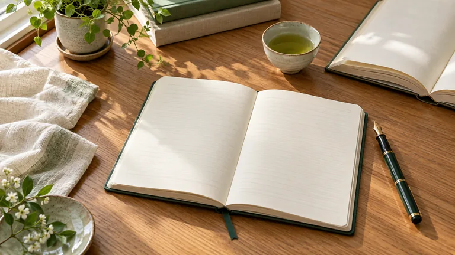
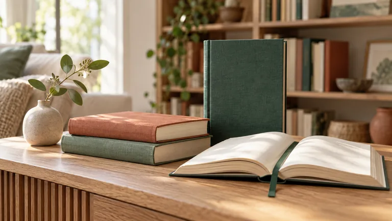
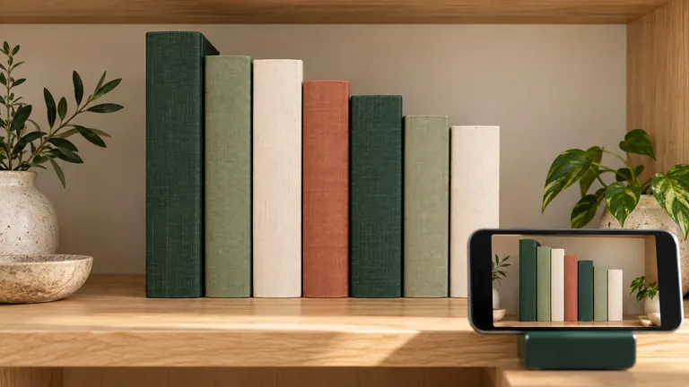

01 · 우리집 서재 이야기
가족의 서재 → 독서 기록 → 이웃과 책 나눔. 랜딩의 사용 방법 앞뒤에 배치하는 12초 소개 영상입니다.
video/landing-family-library-story-720p.{mp4,webm}추가 사진 3종과 실제 영상 2종. 기존 서재의 초록·아이보리 색상에 맞춰 제작했습니다.
1280 × 720 · 24fps각 12초 · 무음버튼으로 MP4와 WebM 버전을 선택한 다음 영상의 재생 버튼을 누르세요. 자동 재생·자동 반복은 사용하지 않습니다.
소개 영상은 생성 사진에 이동 효과·장면 전환·문구를 더한 편집 영상입니다. 촬영 가이드는 직접 제작한 벡터 모션그래픽이며 실제 앱 녹화나 실제 판독 결과가 아닙니다.
가족의 서재 → 독서 기록 → 이웃과 책 나눔. 랜딩의 사용 방법 앞뒤에 배치하는 12초 소개 영상입니다.
video/landing-family-library-story-720p.{mp4,webm}정면 촬영 → 판독 목록 확인·수정 → 확인한 책 등록. 사진 업로드 전에 보는 짧은 사용 안내입니다.
video/add-photo-three-step-guide-720p.{mp4,webm}
독서 기록을 시작하는 안내에 사용합니다.
me-reading-journal-desk-{768,1536}.webp
추천 섹션의 소개 이미지입니다. 실제 도서 표지와 구분합니다.
recommend-unread-books-selection-{768,1536}.webp
밝은 곳에서 한 칸씩 촬영하는 구도를 안내합니다.
add-photo-shelf-framing-{768,1536}.webp사진은 Next.js static import로 사용합니다. 영상은 필요한 파일을 src/img/video에서 public/img/video로 복사한 뒤 연결합니다. 현재 실행 중인 앱에는 아직 반영하지 않았습니다.